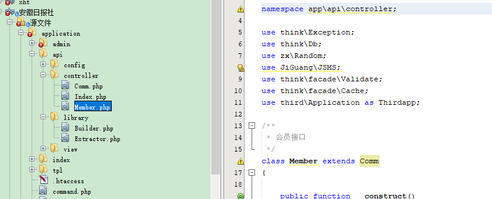
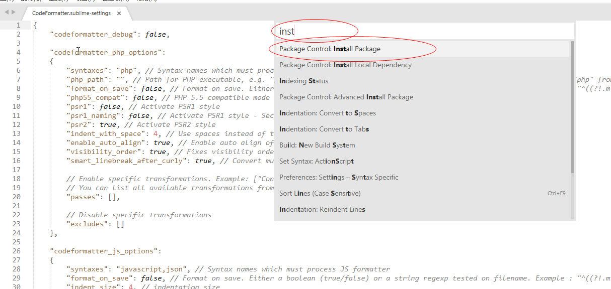
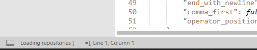
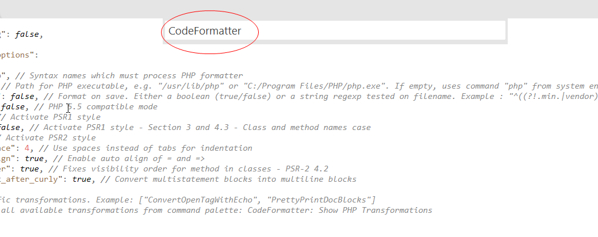
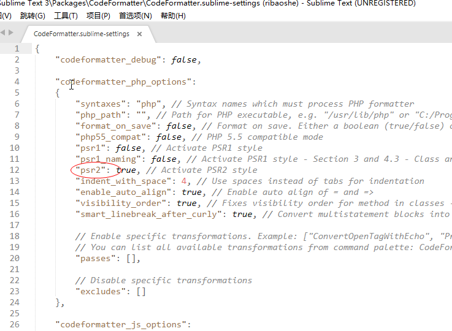
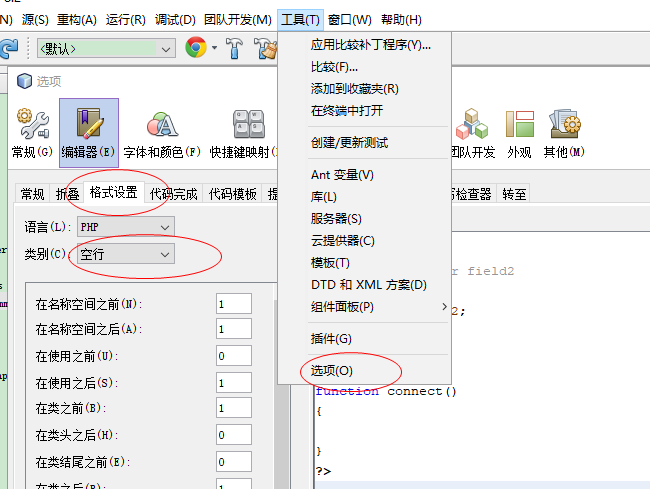

命名
文件
- 目录使用小写+下划线；
- 类库、函数文件统一以.php为后缀；
- 类的文件名均以命名空间定义，并且命名空间的路径和类库文件所在路径一致；
- 类文件采用驼峰法命名（首字母大写），其它文件采用小写+下划线命名；
参照一下文件命名方式：

代码
- 常量中所有字母都 必须 大写，词间以下划线分隔，如：
const DATE_APPROVED = '2012-06-01'; - PHP所有 关键字 以及 True/False/Null 必须 全部小写，如：
if,elseif,or,true,use - 函数的命名 必须 使用小写字母和下划线（小写字母开头）的方式，例如
get_client_ip - 方法的命名 必须 使用驼峰法（首字母小写），例如
getUserName - 属性的命名 必须 使用小写加下划线，例如
table_name、instance - 类名和类文件名保持一致， 必须 使用驼峰法命名（首字母大写）,此处的「类」泛指所有的「class 类」、「接口」以及「traits 可复用代码块」；如：
class Member extends Controller - 必须 使用可阅读的英文或中文拼音命名类、方法、属性等， 一定不可 使用如
$a,$b,$sql1,$sql2等无明确意义的命名方式
参照以下代码：
1 | namespace think; |
其他
- 数据表和字段采用小写加下划线方式命名，并注意字段名不要以下划线开头，例如
zx_member表和user_name字段
编码
标签与编码
- PHP 代码 必须 使用
<?php ?>，不可使用短标签和自定义标签 - 纯 PHP 代码文件 必须 省略最后的
?>结束标签 - PHP 代码 必须 且只可使用
不带BOM的UTF-8编码 - 所有 PHP 文件 必须 以一个空白行作为结束
空格
- 非空行后 一定不可 有多余的空格符
- 代码 必须 使用 4 个空格符的缩进，一定不可 用 tab 键
- 其他按照
PSR2规则，使用编辑完成代码格式自动化…
行
- 每个
namespace命名空间声明语句和use声明语句块后面，必须 插入一个空白行 - 类和方法开始花括号（
{） 必须 写在类或函数声明后自成一行，结束花括号（}）也 必须 写在类或函数主体后自成一行 - 为了阅读方便，可适当添加空行，但不可滥用，不可出现连续空行
if，else等控制模块 一定不可 写成一行，必须 使用 「花括号」 分行；使用关键词elseif代替所有else if- 控制模块不可嵌套多层，请使用函数等优化方法替代
- 其他按照
PSR2规则，使用编辑完成代码格式自动化…
代码优化
- 去除不必要的变量命名，如：
1
2
3$plan = M('Plan');
$plan_list = $plan->where('Is_show=1')->field('Id,Title,Add_time')->order('Add_time desc,Id ASC')->limit(5)->select();
$this->assign('plan_list', $plan_list);
可优化成：
1 | $this->assign('plan_list', M('Plan')->where('Is_show=1')->field('Id,Title,Add_time')->order('Add_time desc,Id ASC')->limit(5)->select()); |
switch代替多个elseif- 控制模块不可嵌套多层，请使用函数等优化方法替代
编辑器代码格式化
sublime
在启动 Sublime 程序后，使用快捷键 “Ctrl + Shift + p “，再选择 “Package Control: Install Package“

等待列出可安装的插件列表

输入”CodeFormatter“找到它，并点击即可安装

打开需要格式化代码的文件，使用快捷键 “Ctrl + Alt + f“ 即可
默认使用psr2样式

NetBeans
使用软件默认快捷键”Alt + Shift + f “,可实现代码格式化
格式化的参数设置如下：

phpstorm
使用软件默认快捷键”Ctrl + Alt + l “,可实现代码格式化
设置代码样式：File -> Settings -> Code Style ->PHP
ZendsSudio
使用软件默认快捷键”Ctrl + Shift + f “,可实现代码格式化